Inventário -> Monitoramento
Para gerenciar os inventários, clique em INVENTÁRIO, em seguida clique em MONITORAMENTO
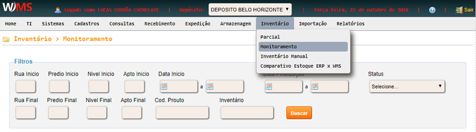
Os status de um inventário são:
- Gerado: o inventário foi criado.
- Liberado: o inventário está liberado para a contagem.
- Concluído: a contagem do inventário foi concluída.
- Finalizado: o estoque já foi movimentado após o inventário.
- Cancelado: o inventário foi cancelado.
Se o inventário possuir status GERADO, passe o mouse sob a seta ao lado do número do inventário
para realizar as seguintes ações:
- Liberar: libera o inventário para a contagem.
- Cancelar: cancela o inventário.
- Adicionar endereços: adiciona mais endereços para serem contados.
- Visualizar andamento: visualiza o andamento das contagens, apresentando
os detalhes, como por exemplo: o usuário que está fazendo a contagem, itens com divergência, etc.
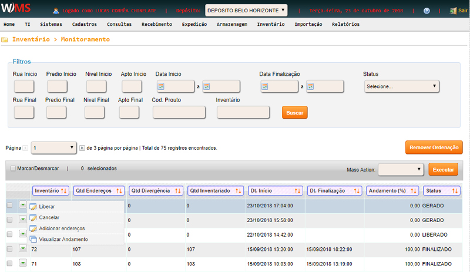
Se o inventário possuir status LIBERADO, passe o mouse sob a seta ao lado do número do inventário
para realizar as seguintes ações:
- Cancelar: cancela o inventário.
- Relatório de avariados: gera o relatório com items avariados.
- Relatório de divergências: gera o relatório com as divergências na contagem.
- Adicionar endereços: adiciona mais endereços para serem contados.
- Visualizar andamento: visualiza o andamento das contagens.
- Imprimir andamento: imprime os endereços do inventário para caso a contagem seja manual(papel).
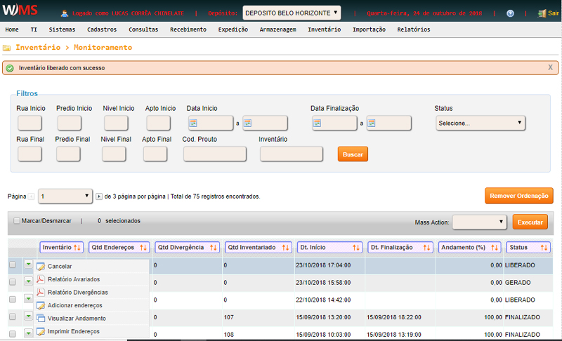
Se o inventário possuir status CONCLUÍDO, passe o mouse sob a seta ao lado do número do inventário
para realizar as seguintes ações:
- Atualizar estoque: ao usar esta opção as divergências contadas serão ajustadas e o estoque
será movimentado (entradas/saídas) e o status do inventário mudará para FINALIZADO.
- Cancelar: cancela o inventário.
- Relatório de avariados: gera o relatório com items avariados.
- Relatório de divergências: gera o relatório com as divergências na contagem.
- Adicionar endereços: adiciona mais endereços para serem contados.
- Visualizar andamento: visualiza o andamento das contagens.
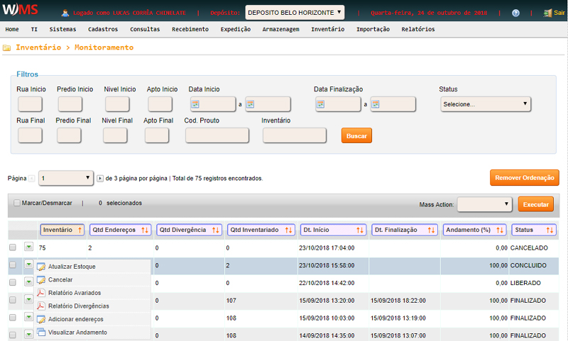
Se o inventário possuir status FINALIZADO, passe o mouse sob a seta ao lado do número do inventário
para realizar as seguintes ações:
- Relatório de avariados: gera o relatório com items avariados.
- Relatório de divergências: gera o relatório com as divergências na contagem.
- Visualizar andamento: visualiza o andamento das contagens.
- Movimentações no estoque: gera o relatório dos produtos e endereços que tiveram
ajuste no estoque (entrada/saída);.
- Exportar inventário: exporta os dados do inventário.
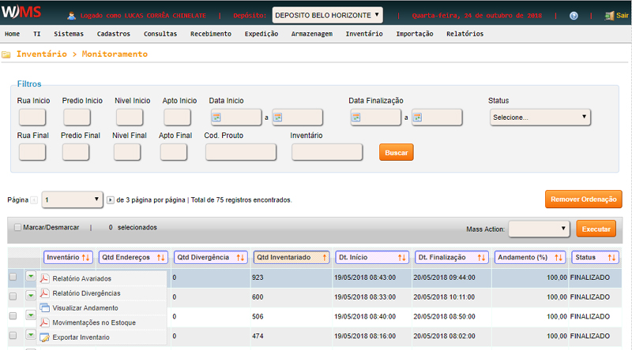
Se o inventário possuir status CANCELADO, passe o mouse sob a seta ao lado do número do inventário
para realizar as seguintes ações:
- Relatório de avariados: gera o relatório com items avariados.
- Relatório de divergências: gera o relatório com as divergências na contagem.
- Visualizar andamento: visualiza o andamento das contagens.
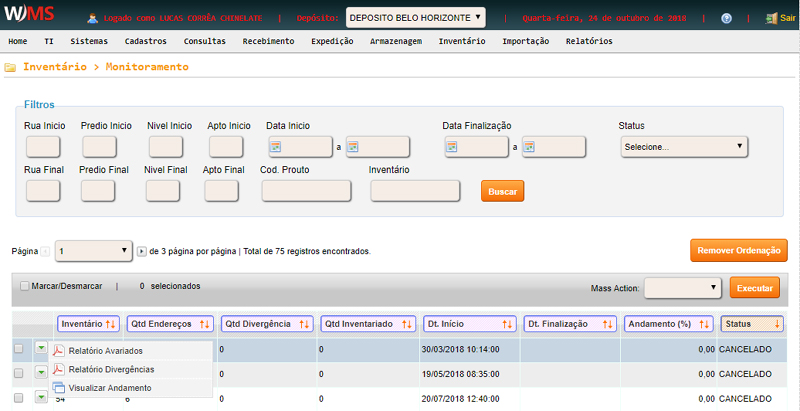
Para visualizar o andamento do inventário, posicione o mouse no começo da linha do inventário,
em seguida clique em VISUALIZAR ANDAMENTO.
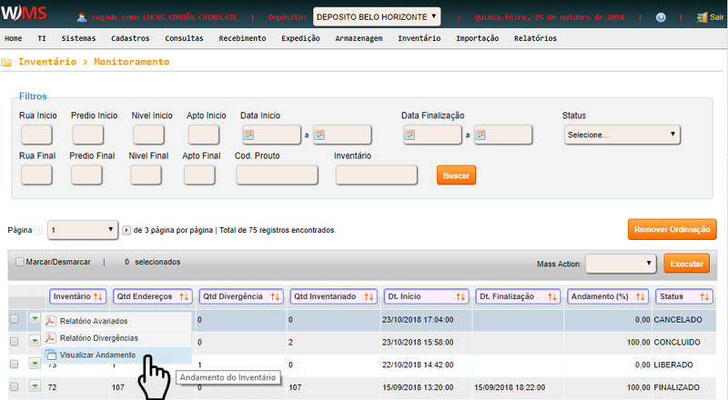
Ao visualizar o andamento, primeiramente é apresentado a quantidade de endereços e o status
(pendente, divergente, inventariado, entre outros).
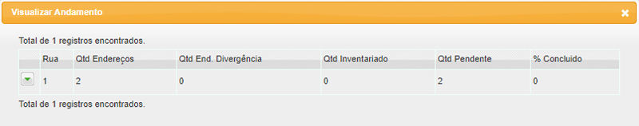
Para visualizar o andamento da conferência, posicione o mouse no começo da linha e clique em
VISUALIZAR CONFERÊNCIA.
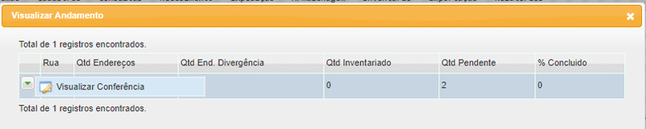
Para visualizar o detalhe das contagens, posicione o mouse no começo da linha e clique em
VISUALIZAR DETALHE CONTAGEM.
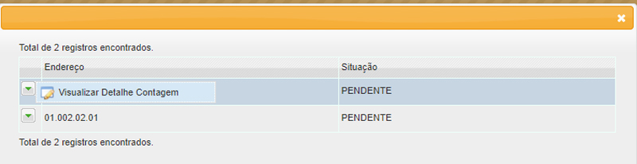
Relatório final - Na guia suspensa ao lado do número do inventário, pode-se imprimir o relatório
ou baixar em PDF na opção MOVIMENTAÇÕES DO ESTOQUE.
Pode-se ainda selecionar vários
inventários e na opção acima da listagem dos inventários em MASS ACTION selecionar
MOVIMENTAÇÕES NO ESTOQUE (XLS) e exportar os ajustes realizados para uma planilha Excel.
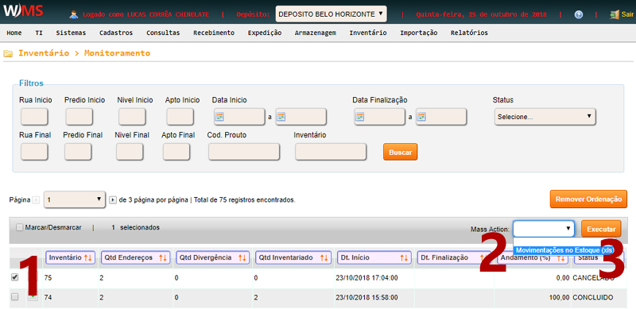